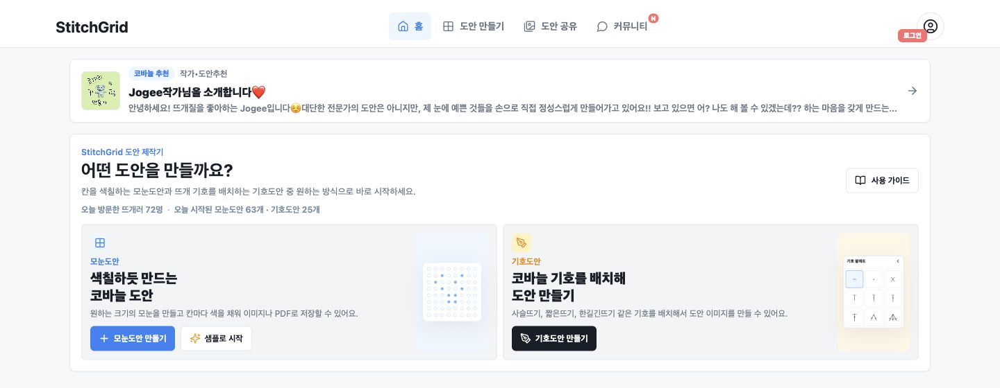

1인 기획·개발 서비스 서비스 운영
StitchGrid취미 속 불편을, 하나의 서비스로.
흩어져 있던 뜨개 도안 제작 과정을 한곳에.
사용자 흐름과 핵심 기능을 직접 기획하고,
개발·배포·운영까지 혼자 진행하는 서비스입니다.
stitchgrid.co.kr · 실제 서비스 화면

홈페이지에서 도안 편집까지안녕하세요, 이예림입니다.
사용자의 불편에서 출발해 필요한 경험을 설계하고,
기획부터 구현과 운영까지 연결합니다.
서로 다른 현장, 하나의 태도.필요한 일을 정의하고, 실제로 사용하는 도구로 연결합니다.
✳프로젝트별 역할과
주요 업무를 소개합니다.
흩어져 있던 뜨개 도안 제작 과정을 한곳에.
사용자 흐름과 핵심 기능을 직접 기획하고,
개발·배포·운영까지 혼자 진행하는 서비스입니다.

홈페이지에서 도안 편집까지다수 금융기관·유관기관과 연계되는 대외계 시스템 개발·운영.
잇다(맞춤대출) 계정계 시스템의 기획·운영, 데이터·웹 연계 인터페이스 관리와 복합지원 서비스 업무를 담당합니다.
Point팀에서 웹 기반 Office의 슬라이드 쇼·애니메이션을 개발하고,
이후 노코드 앱 빌더의 그래픽 편집 컴포넌트를 개발했습니다.
작업자의 요구사항과 반복 업무를 분석하고,
자동화 기능·시스템 UI·작업 프로세스를 설계했습니다.
기능을 만드는 것뿐 아니라,
그 기능이 실제 업무에서 어떻게 사용되고 운영되는지까지 고민합니다.
프론트엔드 개발부터 금융 IT 시스템 운영까지 경험하며, 개별 기능뿐 아니라 시스템 간 연계와 전체 서비스 흐름을 이해하는 역량을 쌓았습니다.
개발자, 현업 담당자, 외부기관 등 서로 다른 관점의 요구사항을 이해하고 조율합니다. 기술적인 문제를 실제 업무의 언어로 설명하고 해결 방향을 함께 찾아갑니다.
오류의 원인을 분석하는 데 그치지 않고, 반복되는 불편과 비효율을 발견해 개선 방법을 고민합니다. 사용자 경험과 운영 안정성을 함께 고려하며 더 나은 서비스를 만들어갑니다.
세종대학교 정보통신공학과2013.03 — 2018.02 · 학사 졸업
정보처리기사 2018.08SQL 개발자(SQLD) 2021.10
린이대학교 교환학생 · 중국어 학습2016.02 — 2016.06
사용자의 필요를 구체적인 서비스로 만드는 일에 관심이 있습니다.